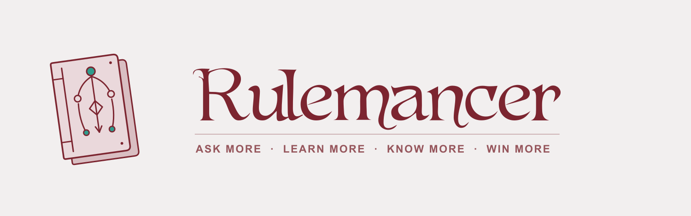
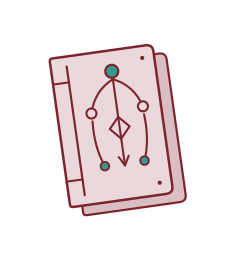

Horizontal lockup


A
closed arcane tome
with a branching decision sigil — sibling to Cardomancer, tilted to the same angle. Rose cover, garnet linework, one reserved
teal
accent on the sigil nodes.